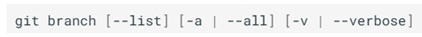
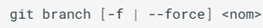
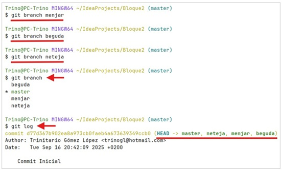
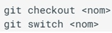

1. Ramas
-
Las branch (ramas) permiten el desarrollo colaborativo y en paralelo de un proyecto.
-
La rama principal de un proyecto originalmente se llamaba master, pero es preferible utilizar el nombre main para evitar la nomenclatura master/slave.
1.2 Mostrar ramas
- Para mostrar las ramas de un repositorio se debe emplear el comando:

- El comando git branch muestra las ramas si:
- No se utiliza ninguna opción.
- Se utiliza la opción --list.
- Más opciones:
- [-a | --all]: Opcional. Muestra todas las ramas, incluyendo las remotas.
- [-v | --verbose]: Opcional. Muestra más información de cada rama.
1.3 Crear ramas
- Para crear una nueva rama se debe emplear el comando:

- [-f | --force]: Opcional. Fuerza la creación de la rama.
- nom: Nombre de la nueva rama.

1.4 Cambiar de rama
- Existen dos órdenes para cambiar de rama, cada una con su propia sintaxis y opciones:

- Para realizar cambios en una rama es necesario:
- Situarse en la rama donde se quiere realizar el cambio ( git checkout o git switch).
- Realizar los cambios deseados.
- Confirmar los cambios con git commit.
1.3 - 1.4 Crear y cambiar de rama
- En el siguiente vídeo :movie_camera: se puede observar un ejemplo práctico donde se muestra cómo crea y se cambia de ramas: